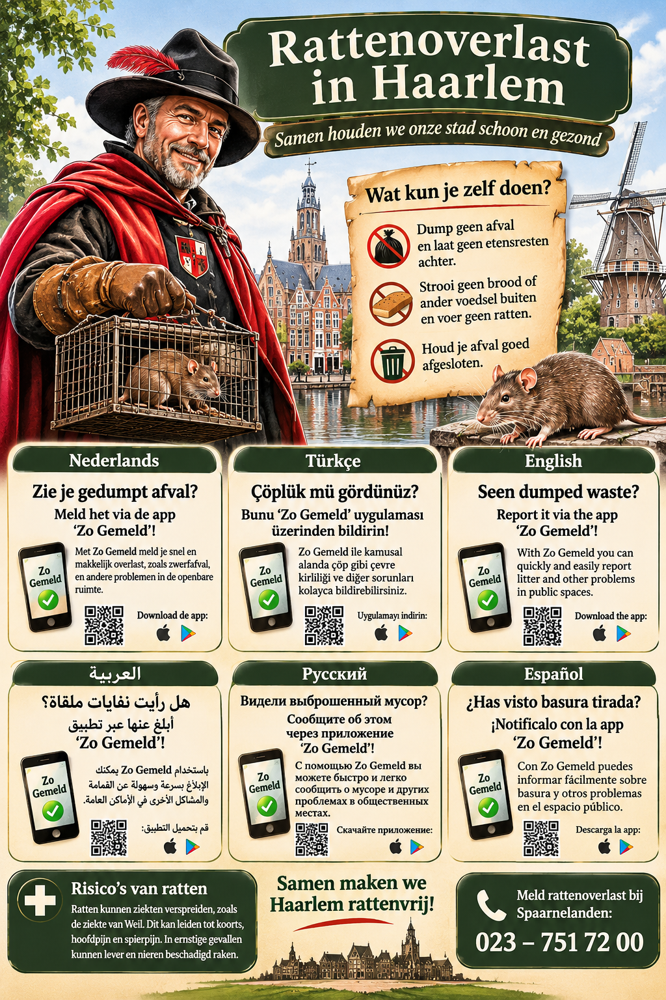

Poster 1

Op deze website vind je twee verschillende meldknoppen. Ze hebben allebei een eigen doel. Je kunt ze allebei gebruiken!
Klik op deze knop om een e-mail aan Spaarnelanden te openen. Vul je gegevens aan en verstuur de e-mail zelf.
Daarna gaat het als volgt:
Sinds november 2026 kun je hiervoor onbeperkt vaak gratis hulp krijgen.
Heb je een rat gezien, rattenkeutels gevonden of een rattenhol ontdekt? Geef dat dan door via deze knop.
Je waarneming verschijnt als een melding op onze rattenkaart. Zo kunnen Haarlemmers zien in welke straten rattenoverlast wordt gemeld en waar mogelijke hotspots ontstaan.
Let op: een melding op de rattenkaart is géén officiële melding bij Spaarnelanden. Wil je dat Spaarnelanden en Anticimex in actie komen? Gebruik dan ook de knop Mail Spaarnelanden.
De officiële meldingen geven toegang tot hulp. De rattenkaart maakt de overlast zichtbaar voor de buurt. Door beide te gebruiken, help je jezelf én je medebuurtbewoners.
Samen maken we zichtbaar wat anders onzichtbaar blijft.
Nadat je de e-mail hebt geopend, keer je terug naar deze website. We kunnen niet controleren of je de e-mail daadwerkelijk hebt verzonden of dat Spaarnelanden deze heeft ontvangen.
Vul hieronder de naam van een straat in Haarlem in om de waarnemingen te bekijken.
De stip wordt op een willekeurige plek binnen de betreffende straat weergegeven. De locatie van de stip geeft dus niet aan waar de ratten daadwerkelijk zijn gezien. De stip toont het totaal aantal meldingen van rattenoverlast voor de hele straat.
Vul het exacte aantal in. Je kunt per melding maximaal 20 ratten doorgeven.
Meldingen worden centraal opgeslagen en zijn zichtbaar voor alle bezoekers.
Rattenvanger van Haarlem is een onafhankelijk bewonersinitiatief. We willen rattenoverlast in Haarlem zichtbaar maken, zodat bewoners samen kunnen zien waar ratten, uitwerpselen en rattenholen voorkomen.
JOUW PRIVACY
De kaart registreert alleen waarnemingen op straatniveau. Er wordt geen naam of persoon aan een melding gekoppeld.
Let op: onze website en de gebruikte hosting- en Google-diensten kunnen technische loggegevens verwerken. We kunnen daarom niet beloven dat er bij deze diensten helemaal geen technische gegevens worden geregistreerd.
Meld iedere keer opnieuw. Ook als je al eerder hebt gemeld!
Veel bewoners raken ontmoedigd wanneer ze steeds ratten zien, maar weinig resultaat merken. Daardoor stoppen ze met melden. Dat is begrijpelijk, maar zo ontstaat een vertekend beeld: als bewoners niet meer melden, lijkt de overlast op papier kleiner dan zij werkelijk is.
Laat Spaarnelanden zien hoe groot de overlast werkelijk is. Blijf melden en laat je niet ontmoedigen!
Stuur deze website door naar je buren, deel hem in buurtapps en plaats hem op je sociale media. Moedig iedereen aan om rattenoverlast officieel te melden én de waarneming vrijwillig op onze rattenkaart te zetten.
Samen maken we zichtbaar wat anders onzichtbaar blijft.
Kies een poster en druk deze afzonderlijk af. Elke poster wordt passend gemaakt voor maximaal één A4.



Ratten kunnen ziektekiemen verspreiden. Via hun urine, keutels en besmet voedsel kunnen mensen ziek worden. Houd daarom samen de buurt schoon.
Iedere bewoner kan helpen. Met deze eenvoudige regels maken we onze buurt minder aantrekkelijk voor ratten.
Gooi geen brood of etensresten op straat. Ratten komen af op voedsel.
Wat vogels laten liggen, eten ratten ook.
Haal voerbakken en etensresten na het voeren weer naar binnen.
Zet geen vuilniszakken naast de afvalbak.
Haal rommel en grote stapels hout weg waar ratten zich kunnen verstoppen.
Ratten kunnen door kleine openingen naar binnen komen.
Ratten kunnen via het riool en via beschadigde of open verbindingen op plekken komen waar mensen wonen. Daarom is goed beheer van het openbare riool belangrijk.
De gemeente is verantwoordelijk voor het beheer en onderhoud van het openbare riool. Bij meldingen over schade, lekkage of andere problemen moet worden onderzocht wat er aan de hand is en moet het openbare riool waar nodig worden hersteld.
De riolering op eigen terrein en de aansluiting vanaf de woning vallen meestal onder de verantwoordelijkheid van de eigenaar. Bij twijfel is het verstandig dit bij de gemeente of verhuurder na te vragen.
Tip: Vraag bij je officiële melding aan Spaarnelanden ook om een gratis rooktest. Daarmee kan worden onderzocht of er een ongewenste verbinding of opening is waardoor rioollucht of ratten zich kunnen verplaatsen.
Wat niet vanzelf zichtbaar wordt, brengen bewoners samen in beeld.
Iedere melding op onze kaart helpt om te laten zien in welke straten ratten worden gezien, waar keutels liggen en waar holen zitten. Zo worden patronen en terugkerende plekken zichtbaar die je met losse meldingen gemakkelijk over het hoofd ziet.
De kaart maakt het probleem zichtbaar voor iedereen — bewoners én gemeente. Met die gezamenlijke informatie kunnen we gerichter aandacht vragen en de gemeente aanspreken op onderzoek en passende maatregelen. De gemeente publiceert niet altijd zelf een compleet straatbeeld; daarom verzamelen bewoners hun waarnemingen hier.
Het is een bewonerskaart, geen officiële gemeentelijke registratie. Meld ratten daarom óók altijd officieel bij Spaarnelanden.
Bovenaan deze pagina staat de knop ‘Mail Spaarnelanden’. Klik daarop om een officiële melding te doen. Volg de uitleg op die pagina.